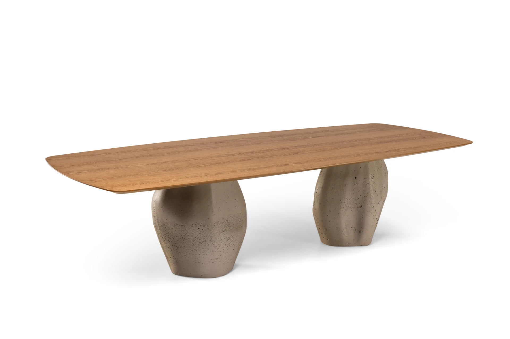
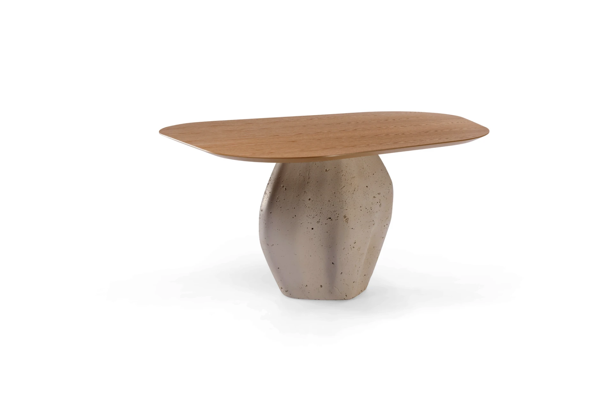

Le Mond
Mesa Petra.
Bases escultóricas em pedra natural orgânica moldadas para criar solidez e leveza visual na sala de jantar. Configurações individuais ou duplas para tampos amplos de 8 a 12 lugares.
Consultar disponibilidade

Ficha Técnica
Especificações & Configurações
Marca / Fabricante
Le Mond
Material da Base
Pedra Natural Orgânica Esculpida
Configuração de Base
Individual ou Dupla
Capacidade
6, 8, 10 ou 12 lugares
Tampos Compatíveis
Vidro Temperado, Madeira Nobre ou Mármore
Ambiente Recomendado
Sala de Jantar & Espaço Gourmet